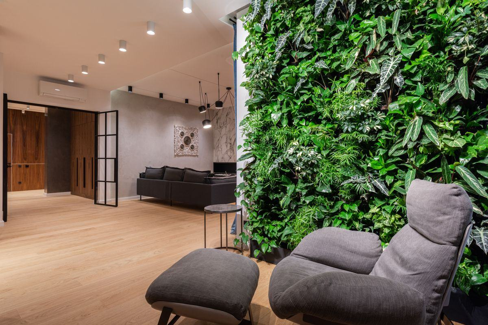

Trois technologies, un bâti qui impose ses règles, un budget d'entretien à assumer sur cinq ans. Cette page réunit les repères techniques et financiers qui permettent d'arriver préparé devant un installateur.

Dans les projets tertiaires, quatre arguments reviennent. Ils n'ont pas le même poids selon qu'il s'agit d'un hall d'accueil, d'un open space ou d'un séjour de particulier.
Un mur végétal derrière un comptoir d'accueil ou dans une cage d'escalier devient le premier plan de toutes les photos du lieu. C'est souvent la raison première d'un projet d'entreprise : donner une identité immédiate à un volume neutre, sans engager de travaux lourds ni modifier les cloisons existantes.
Le feuillage, la mousse et le substrat absorbent une partie de l'énergie sonore et cassent les réflexions sur les surfaces dures. L'effet dépend de la surface traitée, de l'épaisseur du complexe et de la nature du support ; il devient réellement mesurable quand un panneau acoustique est intégré derrière le végétal.
Un mur vivant module l'hygrométrie de sa zone proche et introduit du mouvement, de la couleur et de l'odeur dans un environnement standardisé. Les retours d'usage portent surtout sur le confort perçu et la qualité d'ambiance : c'est un argument légitime, à ne pas confondre avec un bénéfice médical.
Les plantes participent aux échanges gazeux et des travaux de recherche portent sur la captation de composés organiques volatils. À l'échelle d'un local ventilé, ces effets restent faibles face au débit d'une VMC. Un mur végétal complète une ventilation correcte, il ne la remplace pas — et aucun installateur sérieux ne promettra l'inverse.
Le même mot désigne trois produits qui n'ont ni le même cycle de vie, ni les mêmes besoins techniques, ni le même coût de possession. Le choix se fait presque toujours sur les contraintes du lieu.
Des plantes cultivées sur support hydroponique ou en substrat, alimentées par une irrigation goutte-à-goutte automatisée. Il évolue, se densifie, demande de la lumière et un contrat de maintenance. C'est le seul qui apporte une vraie présence du vivant.
Le mur vivant →De vrais végétaux — mousses, lichens, feuillages — dont la sève est remplacée par une solution de conservation à base de glycérine. Ni arrosage, ni lumière, ni taille. La solution des cloisons sans plomberie et des locaux loués.
Le mur sans entretien →Un feuillage synthétique agrafé sur trame. Le budget le plus bas et la pose la plus simple, pour des surfaces vues de loin ou des locaux sans aucune lumière — au prix d'un rendu et d'un toucher qui ne trompent personne de près.
Quand y penser →Fourchettes hors taxes constatées en France, pose comprise, hors travaux préalables d'électricité et de plomberie.
| Critère | Naturel vivant | Stabilisé | Artificiel |
|---|---|---|---|
| Prix au m² posé | 600 – 1 200 € HT | 400 – 900 € HT | 150 – 400 € |
| Arrosage | Irrigation automatisée | Aucun | Aucun |
| Lumière nécessaire | Naturelle ou horticole | Aucune | Aucune |
| Entretien annuel | 80 – 200 €/m²/an | Dépoussiérage occasionnel | Dépoussiérage occasionnel |
| Durée de vie indicative | Renouvellement continu des plants | 8 à 10 ans en intérieur sec | 5 à 10 ans selon la gamme |
| Poids en charge | Élevé, à vérifier | Faible | Très faible |
| Usage extérieur | Possible avec système dédié | Non | Gammes traitées anti-UV |
Un projet de mur végétal intérieur ne se décide pas sur un rendu 3D mais sur quatre réponses très concrètes, à obtenir avant même de parler de plantes.
Un mur naturel en charge d'eau atteint couramment 30 à 60 kg par m². Sur une cloison légère, l'installateur pose une ossature reprise au sol plutôt que de percer.
Entre le végétal et le mur, une membrane et une lame d'air isolent le bâti. Le point sensible reste le bac de récupération et son évacuation en pied de mur.
Une alimentation, un retour ou un bac, une prise pour la pompe et le programmateur. C'est souvent ce poste, et non le végétal, qui fait varier le devis.
En dessous d'un certain niveau d'éclairement, un mur vivant s'étiole. On ajoute alors un éclairage horticole, à compter 100 à 300 €/m² à l'installation.
Ces quatre points conditionnent aussi le choix de la technologie : sans arrivée d'eau ni lumière naturelle, le stabilisé s'impose de lui-même. Le détail des supports et des étapes de pose figure sur notre page installation & support.
La surface commande le budget, mais aussi la crédibilité du geste : en dessous de 2 m², un mur végétal devient un tableau végétal, ce qui est un autre projet.
Fond d'accueil, tête de lit, retour de comptoir, montée d'escalier. C'est le format le plus fréquent chez les particuliers et dans les petits commerces. Il se traite très bien en stabilisé, sans aucun travaux annexe.
Hall d'entreprise, salle de réunion, salle de restaurant. La surface justifie une étude, une irrigation dimensionnée et un contrat d'entretien. Un projet de 15 m² en bureaux se situe entre 9 000 et 18 000 € HT.
Végétaliser des bureaux →Atrium, double hauteur, façade intérieure de lobby. Ici, l'accès pour la maintenance devient un sujet de conception : nacelle, passerelle ou modules démontables doivent être prévus dès le plan.
Les questions qui décident réellement d'un projet portent rarement sur la botanique. Voici les réponses courtes, avant le détail complet de notre guide des prix.
De 400 à 900 € HT le m² posé en stabilisé, de 600 à 1 200 € HT le m² posé en naturel vivant hors système d'irrigation, de 150 à 400 € le m² en artificiel. À cela s'ajoutent, pour le vivant, l'éclairage horticole éventuel (100 à 300 €/m²) et l'entretien annuel (80 à 200 €/m²).
La pose est presque toujours intégrée au prix au m² annoncé. Ce qui est facturé en plus, ce sont les travaux préparatoires : création d'une arrivée d'eau, tirage d'une ligne électrique, ossature reprise au sol, nacelle en grande hauteur. D'où l'importance d'une visite technique avant chiffrage.
Pas nécessairement. Le sur-mesure porte d'abord sur le calepinage, la palette végétale et la finition du cadre. Ce qui fait grimper la facture, ce sont la hauteur, la densité végétale et les contraintes d'accès — pas le fait de dessiner un format spécifique.
Décrivez le projet en deux minutes : type de mur envisagé, surface approximative, présence d'une arrivée d'eau, exposition à la lumière et délai souhaité. Nous transmettons la demande à un installateur partenaire de votre secteur, qui vous rappelle sous 24 h ouvrées.
Demander mon devis →Un mur végétal intérieur ne se juge pas le jour de la livraison mais deux ans après. Le poste entretien doit être arbitré au moment du devis, jamais après.
Comptez 4 à 12 visites par an selon la palette végétale et l'exposition : contrôle de la pompe et des goutteurs, réglage du programmateur, apport d'engrais, taille, nettoyage du bac et remplacement des plants faibles. Budget courant : 80 à 200 € HT par m² et par an, souvent contractualisé dès la pose. Le détail figure sur notre page entretien & arrosage.
Ni eau, ni engrais, ni taille. Un dépoussiérage doux à l'air comprimé ou au plumeau une à deux fois par an suffit, à condition de rester dans une pièce sèche, sans soleil direct ni humidité. La densité s'affaisse lentement : la durée de vie annoncée est de 8 à 10 ans en intérieur sec, davantage dans un local climatisé stable.
Deux minutes pour décrire le projet, un devis d'installateur sous 24 h ouvrées. Gratuit et sans engagement.
Demander mon devis gratuit